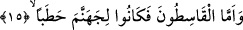

bozmuş olmalarından dolayıdır. Çünkü nâkis kelimesinin kökü bozmak anlamına gelir.
Bu kimseler -bilindiği üzere- Hz. Âişe’yi yanlarına aldılar ve onu “Asker” ismindeki
bir deveye bindirerek Basra’ya götürdüler. Bu sebeple o hâdiseye “Cemel Vakası”
ismi verildi.
“Kâsıtûn”a gelince; bunlar da Muâviye’nin yanında yer alanlardır. Bunlara “kâsıtun”
denmesi, hak olan halîfe ile savaşa tutuşarak zulmettikleri ve adâletten ayrıldıklarından
dolayıdır. Bu hâdiseye de “Sıffin Günü” adı verilmiştir.
“Mârikûn” ile kasdedilen ise Hâricilerdir. Çünkü onlar Allah’ın dininden çıkmışlar,
Allah’ın Peygamberinin halîfesi ile savaşmayı helâl kabul etmişlerdir. “Mârikûn”
kelimesinin kökü, çıkmak demektir. Bunlar Abdullah b. Vehb er-Râsî ve “Zi’s-südeyye”
lakabı ile meşhûr olan Harkus b. Züheyr el-Beceli’dir. Bu hâricilerin katıldığı hâdiseye
ise Nehrevan günü denir. Nehrevan Irak’ta Bağdad’a dört fersah mesâfede bir yerin
adıdır.
“Teslimiyet gösteren kimseler,” Bizim yaptığımız gibi Allah’ın emrine boyun eğen,
itâat eden kimseler…
Sa’dî Müfti der ki: Bu hitâb ve söz, cinlerin sözü olabileceği gibi Allah Teâlâ’nın
Peygamber (s.a.) Efendimiz’e yapmış olduğu hitâb da olabilir. Çünkü âyetin devamı
buna işâret etmektedir.
“İşte onlar” yâni İslâm’a girenler “doğru yolu arayanlardır.” “Araştıranlar”
kelimesinin kökü olan “et-taharrî”, aslında gerek söz gerek fiil olsun daha uygun ve
daha elverişli olanı talep etmek demektir. Aynı âyette yer alan “raşed” kelimesi ise
Kamus’un işâret ettiği üzere doğru yola girmek, doğru yolu bulmak demektir. Buna göre
denmiş oluyor ki: İşte onlar, büyük bir lütfa nâil olarak hak ve doğru yola girmişlerdir.
Bu yol onları sevap yurduna ulaştırır. Doğrunun, doğru ve hak yolun araştırılması
ifâdesi, mecâzî bir ifâdedir. Aradaki alâka ise sebebiyettir.
Bu ifâdeye şöyle bir mânâ da verilebilir: “Onlar, doğru yolda yürümeye ve bu yoldan
maksadlarına ulaşmaya karar vermişlerdir.”
Bu ifâdeler bize gösteriyor ki cinler, yaptıkları amellere karşılık sevap alacaklardır.
Çünkü âyette sevabın sebebi ve onu gerektiren şeyler zikrediliyor. Bunun açıklaması
daha önce geçmişti.
15. Hak yoldan sapanlara gelince, onlar cehenneme odun olmuşlardır.
“Hak yoldan sapanlara gelince” yâni hidâyet yolundan ayrılanlar ise “onlar
cehenneme odun olmuşlardır.” Burada yer alan ve “odun” şeklinde tercüme edilen
“hatab”, ateşi tutuşturmak için hazırlanan şey demektir. Bu anlam göz önüne alınırsa
âyet-i kerîmede şöyle denmiş oluyor: Haktan sapanlar ise tıpkı insanların kâfirleriyle